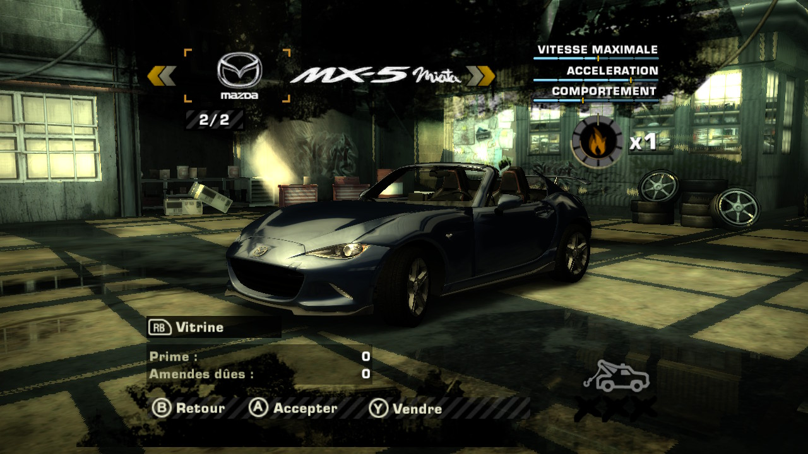

Version Xbox 360, jouée sur Nintendo Switch avec le portage nfsmw-nx. La voiture est fabriquée dans ton navigateur à partir de ta copie du jeu et du modèle : rien n'est envoyé sur internet, aucun fichier du jeu n'est fourni ici.
une à deux minutes : c'est ton navigateur qui fait tout le travail
Télécharger le zipgame_root sur sdmc:/switch/nfsmw-nx/ en remplaçant les fichiers.LISEZMOI.txt).